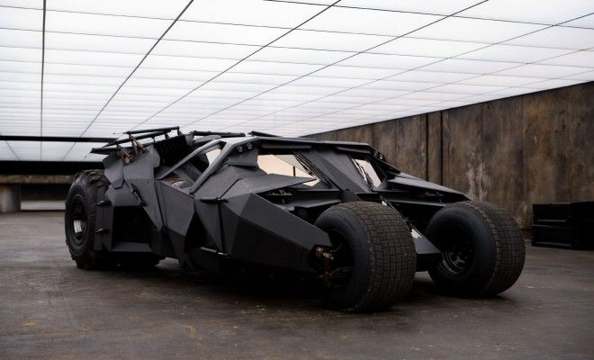

El mejor Batmobile

El acróbata es es el ficticio automóvil conducido por el superhéroe Batman. Ubicado en el Batcave, al cual accede a través de una entrada oculta, el Batmobile es un vehículo fuertemente armado que es usado por Batman en su lucha contra el crimen.
Especificaciones
Longitud: 4,57 metros.
Ancho: 2,84 metros.
Peso: 2,3 toneladas.
Aceleración: puede pasar de 0 a 60 km/h en 5,6 segundos.
Motor: Vauxhall / GM de 5,0 litros.
Neumáticos: Llantas Super swampers soportadas por ejes de titanio.
En Batman Begins, Bruce Wayne adquiere a través de Empresas Wayne un vehículo militar, llamado "El Acróbata" para usarlo como Batmobile. Originalmente pintado con un camuflaje militar, Bruce le solicita a Lucius Fox que pinte el "Acróbata" de negro. El vehículo resultante nunca es nombrado como el Batmobile.
El "Acróbata" hace su aparición en un estacionamiento, el cual es controlado remotamente por Batman abriendo fuego contra los autos para intimidar a El Espantapájaros y un mafioso ruso antes de que el Caballero Oscuro apareciese en escena. A pesar de no detener el escape del ruso, Batman consigue exitosamente capturar al Espantapájaros y a los Batmen (falsos Batman).